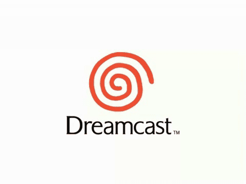

Dreamcast Launch
 By
RANews
By
RANews

Intro
You asked, we delivered - the sixth generation of home consoles is finally coming to RetroAchievements with the debut of the Sega Dreamcast! Achievement sets will be released to the public very, very soon; it may even be out already by the time you read this!
We at the RANews team would like to extend our deepest appreciation to the many developers who have contributed to one of the most anticipated new console releases in RetroAchievements history. We also owe a great debt of gratitude to everyone hard at work on the Libretro Project, without whom none of this would be possible.
Although the Dreamcast could not compete with the sales juggernaut that was the PlayStation 2 and ultimately ended up being Sega’s final console, it certainly went out with a bang. As you read through this article, you may notice repetition of words and phrases such as “unique”, “one of a kind”, and “unlike anything else”. This is not hyperbole, but rather speaks to the true nature of the Dreamcast’s library. A staggering number of these games initially sold poorly as a result of their experimental design, before going on to become cult classics years later. If this is your first exposure to the Dreamcast, we encourage you to delve into these games with a sense of curiosity and open-mindedness.
Without further ado, now presenting the RetroAchievements Dreamcast launch window lineup! Some of these sets are still in development, but many have already been completed; keep your eyes peeled for the “Available At Dreamcast Launch” tag. Enjoy!
| Game | Genre |
|---|---|
 Sega GT Sega GT |
Racing Simulation |
- By:
 MGNS8M
MGNS8M
Unlike the other racing games found on this list, Sega GT takes more of a simulation approach. There are tons of cars available, as well as extensive customization options to tailor your experience just how you like it. If you enjoy games like Gran Turismo, then this will be right up your alley.
| Game | Genre |
|---|---|
 Super Puzzle Fighter II X for Matching Service Super Puzzle Fighter II X for Matching Service |
Puzzle |
- By:
 televandalist
televandalist - Available At Dreamcast Launch!
This is a 1v1 competitive falling block puzzle game featuring chibi renditions of Capcom characters from the Street Fighter and Darkstalkers series. It’s all about thinking ahead and planning out elaborate combos in order to overwhelm your opponent. The “Matching Service” in the title refers to the online mode that was once available, a prime example of how the Dreamcast was ahead of its time.
| Game | Genre |
|---|---|
 18 Wheeler: American Pro Trucker 18 Wheeler: American Pro Trucker |
Racing, Trucker sim |
- By:
 Tybis
Tybis - Available At Dreamcast Launch!
Have you ever dreamed of being a pro trucker? If so, Sega’s got you covered. Balance racing the clock with protecting your cargo as you drive through the United States in this arcade port.
| Game | Genre |
|---|---|
 Power Stone Power Stone |
3D Fighting |
- By:
 SlashTangent
SlashTangent - Available At Dreamcast Launch!
Have you ever gotten so mad at your opponent during a fighting game that you wanted to pick something up and throw it at them? If so, have we got a game for you! Power Stone mixes all the best elements of 3-D fighters and Beat ‘em Ups to create an experience that is like no other. Nearly everything in the arena can be picked up and used as a weapon, powerful weapons that range from lead pipes to rocket launchers drop during the fight, and all of this happens as each fighter tries to capture three Power Stones which allows the fighter to turn into a nearly unstoppable version of themselves.
| Game | Genre |
|---|---|
 Sonic Adventure Sonic Adventure |
Platformer, Action-Adventure |
- By:
 GalacticSpear and SlashTangent
GalacticSpear and SlashTangent - Available At Dreamcast Launch!
Sonic Adventure is the first true 3D Sonic game and the highest selling Dreamcast game. A radical departure from its predecessors, Sonic Adventure features six playable characters, each with their own story campaign, and many different styles of gameplay. Level designs range from linear to exploratory to…fishing-based? The fan favorite Chao Garden makes its debut here, a pet raising and racing game-within-a-game with surprising depth. Completionists will have plenty to keep them busy in this massive game, undoubtedly one of the greatest the Dreamcast has to offer.
| Game | Genre |
|---|---|
 Crazy Taxi Crazy Taxi |
Racing / Action |
- By:
 xnaivx
xnaivx - Available At Dreamcast Launch!
If there were ever a game that both served as a game as well as a snapshot of the cultural zeitgeist at the time, Crazy Taxi is certainly it! This arcade racer is a near perfect port to the Sega Dreamcast. Your objective is to pick up customers in your taxi and get them to their destination as quickly as possible. The faster you get them there, the more money (and time in Arcade Mode) you’ll receive. The game might best be remembered for its soundtrack, including the Offspring and Bad Religion, and it’s customers destinations which include, Pizza Hut, Tower Records, Kentucky Fried Chicken and many more.
| Game | Console | Genre |
|---|---|---|
 House of the Dead 2, The House of the Dead 2, The |
Arcade | Light-Gun Shooter |
- By:
 Snow
Snow - Available At Dreamcast Launch!
This horror rail shooter is best known for its branching path system, which keeps replayability high as each playthrough is unique. Originating in arcades, high score chasers will find plenty to enjoy here. The game is designed around a light gun, though a more traditional control scheme is also available.
| Game | Genre |
|---|---|
 Resident Evil 2 Resident Evil 2 |
Survival-Horror |
- By:
 AlexGatao
AlexGatao
Resident Evil is a series that needs no introduction, and you may have even played the Nintendo 64 or PlayStation versions of Resident Evil 2 on RA, but how does this Dreamcast port stack up? All the content you’d expect is here, with better character models and audio in comparison to previous console versions. Whether you’re revisiting the game or playing through it for the first time, you can’t go wrong with this masterclass in survival horror.
| Game | Genre |
|---|---|
 Triggerheart Exelica Triggerheart Exelica |
Bullet Hell |
- By:
 TeddyWestside
TeddyWestside - Available At Dreamcast Launch!
Ok, so you are playing a bullet hell shmup, standard fare in gaming. But instead of a ship, you control a flying robot girl with a spear she can impale enemies with. When she uses this she can then chuck those enemies into the other enemies. Sure, she can fire normal bullets too, but the heart of this game’s fun is using your enemies as bowling balls!
| Game | Genre |
|---|---|
 Armada Armada |
Action |
- By:
 siouxerskate
siouxerskate
Originally intended as an MMO, Armada is a space shooting action-RPG that presents itself as a shoot ‘em up. While traversing space, you’ll find yourself taking on a plenty of missions, from escorting ships, delivering materials, and destroying enemy ships. Your reward for these missions is collecting large bounties to enable you to upgrade your ship for future missions. With support for up to 4 players simultaneously, enlist three friends to help you take down the powerful Armada!
| Game | Console | Genre |
|---|---|---|
 Metal Slug 6 Metal Slug 6 |
Arcade | Run ‘n Gun |
- By:
 zxmega
zxmega - Available At Dreamcast Launch!
Metal Slug 6 continues what everyone loves about the series: jaw-dropping spritework and hard as nails arcadey run and gun action. Your character choice actually matters this time around, with each having their own strengths and weaknesses. If you’re a fan of the series, you’re sure to enjoy this one as well.
| Game | Genre |
|---|---|
 Pen Pen TriIcelon Pen Pen TriIcelon |
Racing |
- By:
 voiceofautumn
voiceofautumn - Available At Dreamcast Launch!
The closest you’ll ever come to a 3-D re-imagining of Antarctic Adventure, Pen Pen TriIcelon is a penguin-adjacent racing game. The game has three game modes. TriIcelon is your classic circuit racing mode that has 20 races spread over 4 different courses. Time Trial is where you can practice the courses and try and set personal records. Where the game really shines is in the VsIcelon mode, where you can play multiplayer with up to 4 players. The game’s appeal lies in its simplicity. With very few controls needed to play the game, practically anyone can pick up and join in on the fun!
| Game | Genre |
|---|---|
 Toy Commander Toy Commander |
Action Adventure |
- By:
 Brandovsky
Brandovsky - Available At Dreamcast Launch!
Toy Commander is yet another example of the dazzling creativity found in so many Dreamcast games. You control several different toy vehicles, completing a variety of themed tasks in the different rooms of a house. You never know what the next objective may be, offering plenty of surprises that keeps things engaging throughout. The environments are similarly inventive, balancing nostalgic childhood aesthetics with innovative gameplay functionality. Check this one out if you’re interested in something unlike anything you’ve played before.
| Game | Genre |
|---|---|
 Donald Duck: Goin’ Quackers Donald Duck: Goin’ Quackers |
Action, Platformer |
- By:
 blendedsea
blendedsea - Available At Dreamcast Launch!
This 3D platformer starring everyone’s favorite cartoon duck features plenty of collectibles to gather as you run and jump your way through Crash Bandicoot-esque platforming gauntlets. It’s largely based on the Nintendo 64 version, but with audio and visual enhancements made possible by the more powerful hardware.
| Game | Genre |
|---|---|
 Ecco the Dolphin - Defender of the Future Ecco the Dolphin - Defender of the Future |
Action Adventure |
- By: MGNS8M
- Available At Dreamcast Launch!
What can be more fun than controlling a dolphin swimming through the ocean? Doing so in 3D, of course! This reboot of a Genesis classic features similar gameplay to the originals, but newly adapted into the third dimension. This is not a remake, however, featuring unique levels and a brand new story.
| Game | Genre |
|---|---|
 Shenmue Shenmue |
Full Reactive Eyes Entertainment |
- By:
 Bartis1989 and
Bartis1989 and  SporyTike
SporyTike
It’s impossible to concisely convey what makes Shenmue so special, but you’ve no doubt heard of it from its dedicated fanbase. It’s part murder mystery, part fighting game, part minigame compilation, part job simulator, and that’s only scratching the surface. It’s a slow-paced game with an intricately constructed world, thanks largely to how so much revolves around the in-game clock. Shenmue is a truly ambitious title, a one-of-a-kind experience that you have to play to truly understand the hype.
| Game | Genre |
|---|---|
 Samba de Amigo Samba de Amigo |
Rhythm |
- By:
 lordpsycho
lordpsycho - Available At Dreamcast Launch!
An arcade port from Sonic Team, Samba de Amigo is a rhythm game best known for its maraca controllers. The song list consists of a nice mix of Latin tunes and 90s pop. Aside from the standard modes you’d expect from this sort of game, there’s a challenge mode full of special objectives to complete, and even a minigame mode! Samba de Amigo is a truly unique game that fans of the genre won’t want to miss.
| Game | Genre |
|---|---|
 Grandia II Grandia II |
RPG |
 Ryudo
RyudoThe follow-up to the legendary RPG Grandia is finally coming to RetroAchievements! The battle system that made the original so unique returns here, and the world is now fully rendered in stunning 3D. This entry features a standalone story, making it the perfect jumping on point for newcomers.
| Game | Genre |
|---|---|
 Tokyo Xtreme Racer Tokyo Xtreme Racer |
Driving |
- By:
 Pebete
Pebete
A Dreamcast launch title, Tokyo Xtreme Racer sets itself apart from the competition with its unique mission structure. Additionally, rather than having traditional courses, the entire streets of Tokyo serve as your racetrack, where anywhere can be a starting or finish line. The more street rivals you defeat, the more cash you earn, which in turn lets you upgrade your vehicle to take on more challenging opponents; rinse and repeat for an addictive gameplay loop that will have racing fans hooked.
| Game | Genre |
|---|---|
 Under Defeat Under Defeat |
Shoot’em Up (Vertical) |
- By:
 guindev
guindev - Available At Dreamcast Launch!
Originating in the arcade, Under Defeat is a shmup following an alternative historical take on World War II. The 3D visuals give it a unique look that even hardcore shmup fans will find refreshing. If you’re in the mood to shoot down old school artillery and slip past hordes of bullets, then Under Defeat may be the perfect Dreamcast game for you.
| Game | Genre |
|---|---|
 Tokyo Xtreme Racer 2 Tokyo Xtreme Racer 2 |
Driving |
- By: Pebete
- Available At Dreamcast Launch!
You may enjoy racing games, but only the truly extreme need apply here. Like its predecessor, Tokyo Xtreme Racer 2 is a mission-based racer taking place in the streets of Japan, now with improved graphics and plenty of new content. There are rivals to challenge, upgrades to purchase, and new cars to discover. Despite stiff competition, Tokyo Xtreme Racer 2 ranks among the greatest racing games on the Dreamcast.
| Game | Genre |
|---|---|
 Puyo Puyo Fever | Puyo Pop Fever Puyo Puyo Fever | Puyo Pop Fever |
Puzzle |
- By:
 Bearfax62
Bearfax62
The last Dreamcast game released by Sega themselves, Puyo Puyo Fever never made it out of Japan. If you’ve played any Puyo Puyo game in the past, you know what to expect: a tile-matching puzzle game where the tiles are little slime bubbles. Connect four or more of them and all of the connected ones will pop. New to Puyo Puyo Fever however is Fever mode which has filling your fever bar in order to be given a new, temporary board. The new board takes the form of a puzzle wherein creating massive chains will allow even bigger attacks on the opposing player.
| Game | Genre |
|---|---|
 Wacky Races Wacky Races |
Racing |
- By:
 BrunoKiko
BrunoKiko - Available At Dreamcast Launch!
You probably wouldn’t expect much from a decades-late video game adaptation of a Hanna-Barbera cartoon, but Wacky Races is arguably one of the best racing games on the Dreamcast. The controls are tight, the power-ups keep things interesting, and the course design is solid. There’s even an Adventure mode for those looking for a robust single player experience.
| Game | Genre |
|---|---|
 Tony Hawk’s Pro Skater 2 Tony Hawk’s Pro Skater 2 |
Extreme Sports, Skateboarding |
- By:
 ZZKer
ZZKer
There’s no such thing as too many Tony Hawk games on RA! Though the Nintendo 64 and PlayStation versions already have achievement sets, this version has better graphics and less fog, giving it a slight edge. It’s the classic rail grinding, kickflipping gameplay you know and love, so what are you waiting for? It’s time to grab your board and jam out to the iconic soundtrack once again!
| Game | Console | Genre |
|---|---|---|
 King of Fighters Neowave, The King of Fighters Neowave, The |
Arcade | Fighting game |
- By: zxmega
- Available At Dreamcast Launch!
A spin-off of the King of Fighters series, Neowave is best described as a remixed version of King of Fighters 2002. Fighting game enthusiasts will enjoy identifying the many small tweaks that make this entry unique, but the most notable change here is the inclusion of three distinct modes of play: SC Mode, GB Mode, and M2 Mode.
| Game | Genre |
|---|---|
 Shin Seiki Evangelion: Typing E Keikaku Shin Seiki Evangelion: Typing E Keikaku |
Typing Practice |
- By:
 Mekevin255
Mekevin255 - Available At Dreamcast Launch!
RAUser, get in the mech and start typing! This strange title features you in the Evangelion universe, but instead of fighting in giant mechs in an action title you’ll go on a typing adventure. It’s anime Typing of the Dead!
| Game | Genre |
|---|---|
 Ikaruga Ikaruga |
Vertical Shoot-‘Em-Up |
- By:
 BenGhazi
BenGhazi
Ikaruga is a shmup unlike any other, and perhaps one of the greatest in its genre. Enemy bullets come in two distinct colors, and the player can swap between two states whenever they want to become immune to one but susceptible to the other. This mechanic can be used offensively as well, absorbing bullets of the same color to store power and shooting at ships of the opposite color for double damage. Ikaruga is a must-play for anyone looking to take on a notoriously difficult challenge.
| Game | Genre |
|---|---|
 Soulcalibur Soulcalibur |
Fighting |
- By: Snow and televandalist
- Available At Dreamcast Launch!
Soulcalibur is a fighting game best known for its overwhelmingly positive critical response. It still holds the fourth place position on Metacritic’s Best Video Games of All Time list, and continues to receive high praise long after its release. It was a Dreamcast exclusive as well, and perhaps one of the greatest examples of what made the system so special. With the addition of achievements, now’s the perfect time to discover why this game is so beloved.
| Game | Genre |
|---|---|
 Looney Tunes: Space Race Looney Tunes: Space Race |
Kart Racing |
- By: TeddyWestside
- Available At Dreamcast Launch!
Bugs, Daffy, and friends take to the Dreamcast in this kart racer. From the roster to the voice acting to the track designs, the Looney Tunes theming is incredibly well-implemented here. This is a strong contender for the best Mario Kart alternative on the system, and should not be dismissed based on the reputation of licensed games.
| Game | Genre |
|---|---|
 Marvel vs. Capcom 2: New Age of Heroes Marvel vs. Capcom 2: New Age of Heroes |
Fighting game |
- By: zxmega
- Available At Dreamcast Launch!
The crossover fighter is back, with tons of new features that make this a truly worthy sequel. You’ll immediately notice the new visual style, bringing together beautiful sprite-based characters with stunning 3D backgrounds. The gameplay has been heavily revamped as well, with teams of 3 being the new standard and a more beginner-friendly control scheme. With a whopping 56 characters to choose from, it’s easy to see why this game is so beloved.
| Game | Genre |
|---|---|
 Sonic Adventure 2 Sonic Adventure 2 |
Platformer |
- By:
 Chawk, SlashTangent, and
Chawk, SlashTangent, and  Zpeligo
Zpeligo
Sonic Adventure 2 effectively builds upon the foundation established by the first game. Story campaigns are split into “good” and “evil” halves this time, featuring six playable characters and plenty of varied gameplay styles. Fan favorite characters Shadow the Hedgehog and Rouge the Bat make their debut here. The ranking system is introduced here as well, adding extra incentive for completionists to perfect each stage. The graphics are improved, the soundtrack is still incredible, and you can even raise Chao once again. Sonic Adventure 2 is without a doubt one of the most memorable Dreamcast games.
| Game | Genre |
|---|---|
 Space Channel 5 Space Channel 5 |
Music/Rhythm |
- By:
 DoctorV
DoctorV - Available At Dreamcast Launch!
Space Channel 5 is a call and response rhythm game in which you play as Ulala, a galactic reporter who fights aliens and encounters all sorts of wacky characters and situations that can only be overcome through the power of dance. It’s a delight on the senses, weaving together story, music, and gameplay seamlessly with consistently engaging visuals and a soundtrack that will surely remain stuck in your head. Space Channel 5 also features one of the greatest cameos in video game history that will leave you wondering “how did they get HIM?!”.
| Game | Genre |
|---|---|
 Jet Set Radio | Jet Grind Radio Jet Set Radio | Jet Grind Radio |
Action Platformer |
- By:
 TheJediSonic
TheJediSonic
Jet Set Radio is a game that absolutely oozes style. The gameplay is all about rollerblading your way through Tokyo and painting the city with graffiti art. The music is perhaps what the game is best remembered for, with infectiously catchy fully vocalized tunes that you may never get out of your head. The cel-shaded visuals further enhance the game’s unique vibe, and have aged tremendously well. Jet Set Radio is one of those games that encapsulates everything that makes the Dreamcast great.
| Game | Genre |
|---|---|
 Resident Evil 3: Nemesis Resident Evil 3: Nemesis |
Survival Horror |
- By: AlexGatao
- Available At Dreamcast Launch!
Jill Valentine is back and on the run as an aptly named creature Nemesis has one mission, kill members of STARS. The original boogeyman of video games, Nemesis will not stop until he has a Jill sandwich…unless you stop him and purge Raccoon City forever!
| Game | Genre |
|---|---|
 L.O.L.: Lack of Love L.O.L.: Lack of Love |
Life Simulation |
- By:
 LogicalFallacy
LogicalFallacy - Available At Dreamcast Launch!
A Dreamcast exclusive released only in Japan, this may be one of the most unique experiences available on the console. You play as a creature from birth through its evolutionary stages, with a focus on survival and forming bonds with those you encounter. With such an original premise, it’s no surprise that this one has become a cult classic.
| Game | Genre |
|---|---|
 Fighting Vipers 2 Fighting Vipers 2 |
Fighting |
- By:
 Bl4h8L4hBl4h
Bl4h8L4hBl4h
If you have fond memories of Fighting Vipers on the Saturn or in arcades, then you’ll be sure to love this sequel. The character roster brings back everyone from the first game, plus several new fighters. The mechanics have been updated, too, with a more fleshed out armor system.
| Game | Genre |
|---|---|
 Dynamite Cop Dynamite Cop |
Action |
- By:
 shnick1980
shnick1980 - Available At Dreamcast Launch!
What if Sega made Die Hard the beat ‘em up and made it over the top? That is what you get with Dynamite Cop. Board the cruise ship and set sail for a short but wacky knuckle buster brawler. Or just shoot your enemies dead, it’s really your call!
| Game | Genre |
|---|---|
 Illbleed Illbleed |
Horror |
- By:
 Soulsderfuchs and
Soulsderfuchs and  Infernox
Infernox
Illbleed is a cult classic survival horror game and yet another Dreamcast exclusive. It parodies low budget horror films throughout, and is most recommended to those who can appreciate such references. There are some unique gameplay elements on display here as well, further cementing its status as unlike anything else out there.
| Game | Genre |
|---|---|
 Rez Rez |
Rail shooter, Music video game, Shoot ‘em up |
- By:
 Etron
Etron
Rez is a one-of-a-kind rail shooter/rhythm game hybrid. You play by locking your crosshair onto enemies, who are then defeated in sync with the music. Whereas a typical rhythm game would have you performing inputs in time with the music, here the music reflects your actions. Trippy visuals and a rumble feature all combine to create a strangely Zen experience best enjoyed wearing headphones and free from distractions.
| Game | Genre |
|---|---|
 MSR: Metropolis Street Racer MSR: Metropolis Street Racer |
Racing |
- By:
 suXin
suXin - Available At Dreamcast Launch!
Though you may not realize it from the title, this is the first entry in the Project Gotham Racing series. This is no ordinary racer, featuring an open world structure and a staggering 262 tracks. The challenges on offer keep your objectives varied as well. This is a massive game that will appeal to completionists who love the grind of always unlocking something new.
| Game | Genre |
|---|---|
 Phantasy Star Online Ver. 2 Phantasy Star Online Ver. 2 |
RPG |
The Dreamcast was ahead of its time with its online capabilities, and Sonic Team took full advantage of that technology with Phantasy Star Online, the first online console RPG. Although the achievement set is restricted to offline mode, this is still a massive game with tons to do. The “Ver. 2” in the title refers to a version update over the original that adds even more content. The gameplay loop here is all about fighting monsters and bosses with your customized build, gathering exp and loot, and returning to the hub to prepare for the next adventure.
| Game | Genre |
|---|---|
 Resident Evil CODE: Veronica X | BIOHAZARD CODE: Veronica Kanzenban Resident Evil CODE: Veronica X | BIOHAZARD CODE: Veronica Kanzenban |
Survival Horror |
- By:
 BahamutVoid
BahamutVoid
Despite lacking a number in the title, Code: Veronica is very much a main series Resident Evil game, following the events of Resident Evil 2 and 3. The series takes a big leap forward with fully 3D environments this time around, as opposed to the pre-rendered backgrounds used previously. Code: Veronica X is an improved version of that game, featuring graphical improvements and further story expansion.
| Game | Genre |
|---|---|
 Sega Bass Fishing Sega Bass Fishing |
Fishing - Arcade |
- By:
 Fridge
Fridge - Available At Dreamcast Launch!
Never one to shy away from bringing esoteric experiences to the arcade, Sega Bass Fishing is the Dreamcast port of Sega’s hit fishing arcade title. The first game to utilize Sega’s fishing rod controller (don’t worry, you can use the standard controller as well) offers several modes: Arcade Mode sees you trying to catch as many fish as possible, in total weight, in a very short time frame. Each fish you catch adds more time to your timer and the bigger the catch, the bigger the time bonus! Original Mode has you competing in fishing tournaments to see who can catch the most fish in total weight. Lastly, there is a Practice Mode you can utilize to help you learn how to get the biggest catches. So, what are you waiting for? Get out on the lake and start casting!
| Game | Genre |
|---|---|
 Cannon Spike Cannon Spike |
Shooter |
- By:
 Delmaru
Delmaru - Available At Dreamcast Launch!
The roster of this multi-directional shooter is made up of a cast of familiar Capcom characters. This is a fast-paced, action-packed experience, with frequent boss fights featuring complex bullet patterns.
| Game | Genre |
|---|---|
 Magic: The Gathering Magic: The Gathering |
Collectible Card Game |
- By: guindev
- Available At Dreamcast Launch!
Magic: The Gathering needs no introduction, but even its most hardcore fans may have missed out on this Japan-only Dreamcast exclusive. On top of the classic cards and mechanics, it embraces its video game-ness by introducing ten unique cards with randomization elements that would not be practical in a real life setting.
| Game | Genre |
|---|---|
 Neon Genesis Evangelion: Typing Project Advanced Neon Genesis Evangelion: Typing Project Advanced |
Typing Practice |
- By: Mekevin255
- Available At Dreamcast Launch!
A typing game based on the Evangelion universe may seem like a strange idea for a video game, but would you believe that there are two of them on the Dreamcast alone? The gameplay is similar in this sequel, but featuring new minigames this time around.
| Game | Genre |
|---|---|
 Skies of Arcadia Skies of Arcadia |
Role-playing |
- By:
 Tayadaoc
Tayadaoc
Skies of Arcadia is an RPG that shows up on pretty much every “Best Dreamcast Games” list, and it’s easy to see why. Between dungeon crawling and exploring the massive world in your airship, there’s a constant sense of discovery, an ongoing fueling of curiosity that makes for an overwhelmingly charming experience. Combined with classic turn-based battles, an engaging story, and impressive graphics for the time, this is pure RPG bliss that embodies all that is great about the genre.
| Game | Genre |
|---|---|
 Space Channel 5: Part 2 Space Channel 5: Part 2 |
Music/Rhythm |
- By: DoctorV
- Available At Dreamcast Launch!
Space Channel 5: Part 2 doubles down on everything that made the original so great. More levels, tighter controls, better graphics, and even stronger audio design are some of the highlights. The presentation is once again delightfully upbeat and downright weird, somehow to an even greater extent than its predecessor. This is a must play for fans of rhythm games and anyone who can appreciate an offbeat sense of humor.
| Game | Genre |
|---|---|
 Typing of the Dead, The Typing of the Dead, The |
Type ‘Em Up |
- By: televandalist
- Available At Dreamcast Launch!
Typing of the Dead revisits the plot of The House of the Dead 2 with an unexpected twist. This time around, rather than shooting enemies outright, you damage them by typing the words that appear on your keyboard as quickly as possible. The changes made to the presentation transform what could once be described as horror into more of a comedy. Multiple paths and endings are available once again, adding some variety to subsequent playthroughs. The difficulty is adaptive as well, becoming easier or harder based on the player’s performance. Typing of the Dead is an utterly bizarre game that deserves to be experienced for the novelty factor alone.